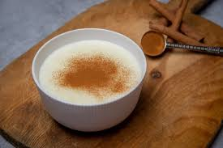

...Sütlaç...
..Sütlü tatlılar içerisinde en çok yapılanı sütlaçtır. Kalorisinin düşük olması da sütlacın tercih edilmesinin sebeplerindendir. Sıcak ya da soğuk bir şekilde tüketebileceğiniz sütlaçlarınız hem yaz hem de kış günlerinde tercih edebileceğiniz bir tatlı çeşididir. Aynı zamanda besleyici de olan sütlaç oldukça da pratik bir tatlıdır. Kontrollü bir şekilde pişirildiğinde inanılmaz bir lezzet elde edeceğiniz sütlaç tatlısını sizler de denemelisiniz. Deneyeceklere şimdiden afiyet olsun.
Tarif:Fatmanur A.

- Kaç Kişilik: 4 kişilik
- Hazırlama Süresi: 15 dakika
- Pişirme Süresi: 10 dakika
Malzemeler
- 1 litre süt
- Yarım su bardağından 1 parmak fazla pirinç
- 2 su bardağı su
- 1 su bardağı toz şeker
- Yarım çay kaşığı tuz
Nasıl Yapılır?
- İlk olarak yıkadığımız pirinçleri ve suyumuzu uygun bir tencereye alarak ocağın altını açalım ve 10 dakika kadar haşlanmaya bırakalım.
- Pirinçlerimiz şiştikten sonra soğuk sütümüzü ekleyelim, orta ateşte süt kaynayıp, sütlaç koyulaşana kadar yaklaşık 50 dakika pişmeye bırakalım.
- Şeker ve tuzu da ilave ederek karıştıralım ve 10 dakika kadar daha kaynamaya bırakalım.
- Sürenin sonunda ocağı kapatalım ve sütlacımızı sunum kaselerine aktaralım
- İlk sıcaklığı çıkan sütlaçlarımızı buzdolabına alalım, bir kaç saat dinlendirelim. Dinlenen sütlaçlarımız servise hazır.
Afiyet Olsun..